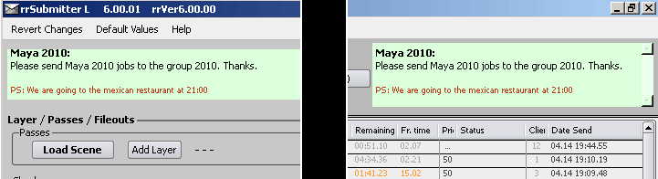

You can enter some information for everyone that uses the render farm.
The information is displayed in rrControl and in rrSubmitter.

If you have defined user accounts in the rrConfig, then you are only allowed to change your own jobs. (can be modified if you change the right for *anonymous* )
If you want to manage jobs of other artists, then rrControl asks for a password every time.
If you are managing a lot of jobs of an other artist, you can change your login via this command.
You can also access this menu via right-click in the job table.
An "enabled" job can be send to a client.
A "disabled" job will not be send to a client.
This does not exclude that clients which are rendering on the job continue to render on the job.
If they should stop rendering the job, you need to "abort & disable" the job.
You can set an "approved" status of a job.
With the default RR configuration this only means that you see a checked box in the job table. The artists can use it as they like.
But you can enable "Wait for Approval before" in rrConfig.
Then an artists has to approve jobs before they get into the main render phase or before they get the finished status.
If you abort a job, then all clients that are currently rendering the job will abort.
Note: If the job is not disabled, it is continued to be send to clients. You have to "Disable & Abort" if you want that no client renders the job from now on.
The server automatically checks each job that is rendering for frames done (and converts the preview images).
It does not automatically check jobs that are finished.
Example for a manual "check job":
Have a finished job and you realize that some frames are broken.
So you delete the images.
Then you send a "check job" and the server re-renders the missing frames.
Deletes a job from the job queue.
(It does not delete rendered frames)
If a client is rendering the job, then the server waits until the client aborted the job before it deletes it.
With "Reset Job" you can set the status of a job to the same as if you have just submitted it.
You usually only need this command if you have overwritten/resaved the Softimage/Maya/Nuke... scene.
Then you can use "Reset Job" (with delete frames).
Otherwise you should not use this command.
You will loose all render log files and all stats of the job.
So after a reset you can never check for older errors.
If a job gets too many error messages, then it is disabled.
If you have fixed the problem, you can use "Clear Error Messages" and enable the job again.
This works for non-rendering jobs only.
It will set the job status to "finished" no matter if all frames are done or not.
This opens a dialog which allows you to create or edit new commands for this menu.
The commands are Python scripts.
Moving jobs in the queue is done in two steps:
1. Select the jobs you want to move.
Use the command "1. Move selected Jobs...".
2. Then select the job where you want to paste the other jobs.
Execute the command "2. Paste jobs before selection".
Select a job, then execute "Select Clients rendering selected Job(s)".
rrControl will select the clients in the client table for you.
You can export jobs as .xml or .csv files.
Note:
These xml files can be loaded into the rrSubmitter, then you can resubmit the job and change the options.
This xml file contains job options like Sequence Divide Min/Max, BUT these options will not be loaded by the rrSubmitter.
Please see the example .xml submission files for submission xml files with options.
If the selected client or client threads is rendering, then it aborts the job.
NOTE:
This is the same as abort, but the client tries to wait until the current frame is finished.
Note:
Often a client gets multiple frames of a job to render.
If the client is able to recognize the output files as they are being rendered, it can abort after one of these frames is done.
This requires the job option "local render out", but is still not available for all renderer.
If it is not possible, the client continues to render all frames.
If the client is rendering, it aborts the current render job.
The client will be disabled and does not take any new jobs.
If the client is disabled, it will not take any new jobs.
Note: This does not abort the client. It will continue to render the current frames of the job it is rendering.
The client will be deassigned from all jobs and it will abort any render.
The effect is similar to Disable & Abort. The client will abort anything it is doing.
And as it is deassigned from all jobs, it will not get any new job.
You have to send a new job or re-assign the client on a job.
"Little Job" is a job attribute. It allows the server to send this job to disabled clients.
You can allow or disallow little jobs on the client if it is disabled.
You can set the artists working hours on a client.
With this command you can temporally disable the working hours.
Commands to restart and close the client application.
This does not affect the clients machine itself, only the rrClient application.
Note: If the client is running as service, the close command will only close the client.
The service will restart the client.
Tells the client to re-load the config file for the rrLogins (see rrConfig)
This is not required if you change anything via rrConfig.
rrConfig sends a reload command via the rrServer to all rrClients.
Tells the client to re-load all config files (everything you set in rrConfig)
This is not required if you change anything via rrConfig.
rrConfig sends a reload command via the rrServer to all rrClients.
If you have installed a new application (A new one, not a new version of an existing one), then you have to add it to the config of the client.
Either via rrConfig or via this command. The client uses the render app installation path files to find the render apps.
Same as the above command.
But before the rrClient finds new applications, it will clear the client.
So you will not have any render application in the rrClient config that does not exist any more.
This command is available for windows rrClient only.
The rrClient will synchronize its time with the rrServer.
You have installed all rrClients as service via rrWorkstationinstaller.
The rrWorkstationinstaller takes a user account with password.
If you are in a windows domain that requires to change the password every x months, then you can update the password via this command on all machines.
This command will print some information for the rrSupport.
If you are requested to execute this command.
You can send a message from one windows machine to an other windows machine.
It uses the same functions as the windows application msg.exe.
It is a direct connection from your machine to the target machine.
For troubleshooting, please test the windows function in a windows command prompt (cmd.exe) and execute the command msg /server:ClientName * "myMessage"
The rrMessage is send via the rrServer to the clients. Therefore it can take up to 45 seconds.
The message will then be displayed by the rrClientWatch application at the target machine.
Messages are cached by the rrServer if the client is offline.
Messages are cached by the rrClientconsole if rrClientWatch is not running (user logged off).
Multiple messages are appended, even if the message popup is already displayed. (up to 2500 letters, then first/earliest message is cropped).
You can add executable lines as custom commands.
E.g. to start VNC.
You have to edit the file RR\sub\cfg_user\clientcommands.txt to add new commands.
Opens a dialog which lets you choose a new command job.
Command jobs can have the same functionality as the client commands above.
But the difference is that it is a job: This means a client will take this job like every other job.
It will finish its current job it has, it will take jobs with a higher priority first.
This allows you for example to restart all rrClients, but first they will finish the current job.
If you would send a command directly to restart the rrClient, it would abort the job it is currently rendering.
There is a wide range of commands available.
E.g. to update all submission plugins on all workstations with the latest version.
This information shows the details of the rrServer if a job is send to a client.
See Server Duties for an explanation of all rrConfig and job options for the decision which job should be send.
This debug information is separated into three parts.
If you need to contact support and want to send detailed information about a job, please use this command.
It will create a .zip file with all information about a job.
It includes:
- Render log files of the job.
- The current job data with all information the server currently stores about the job.
- The current amount of render licenses used.
- Client application log files.
- RR configuration files
Exports a snapshot of the current job database and the current status of all clients.
These files can be used by the support team to load the snapshot.
If you enable the debug messages for a job at the rrServer, then the rrServer will print a lot of informations like which frame will be send to a client into its logfile RR/sub/log/server...txt
If you send this command to the rrServer, then the rrServer will log the status of the auto-WOL into the WOL logfile RR/sub/log/server...WOL.txt
Which clients are able to WOL, which are not, which jobs need clients and have clients to WOL.
Note: The auto-WOL function will not print all jobs, it will stop if it has found a job with a client to WOL.
You can use the Layout menu to show/hide windows or table columns of rrControl.
You can also lock the UI that you cannot move the windows around any more.
Any of course you can save the Layout for your machine.